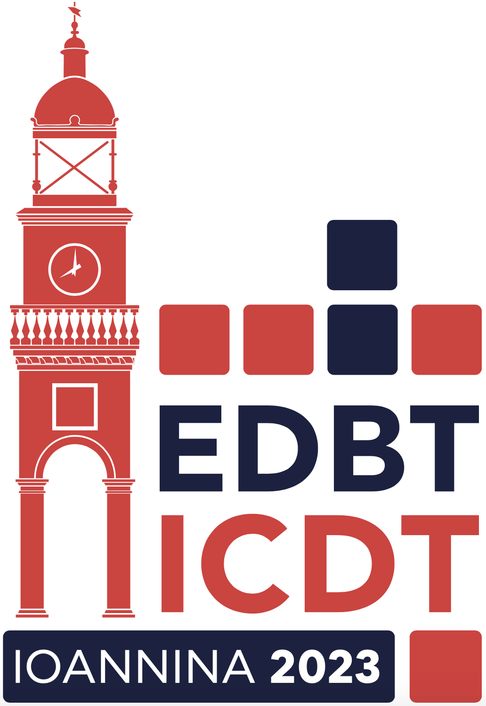

General Information
Program
Co-located Events
Camera Ready Instructions
Calls
Organization
EDBT/ICDT 2023 Invited Talks
We are very pleased to announce the EDBT/ICDT 2023 invited speakers.
|  |
EDBT/ICDT 2023 Joint Conference
28th March - 31st March, 2023Ioannina, Greece |
|
We are very pleased to announce the EDBT/ICDT 2023 invited speakers.